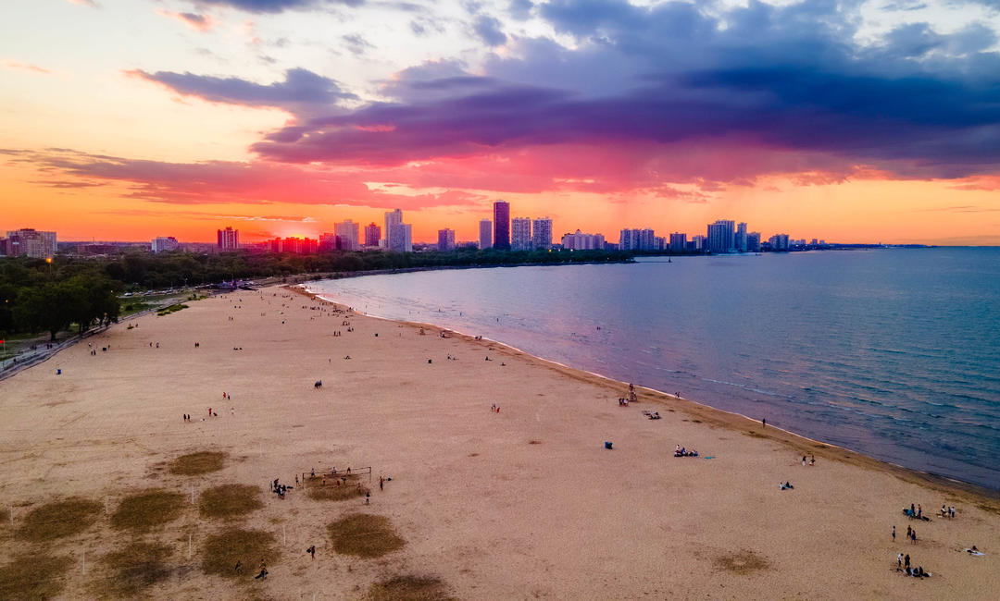
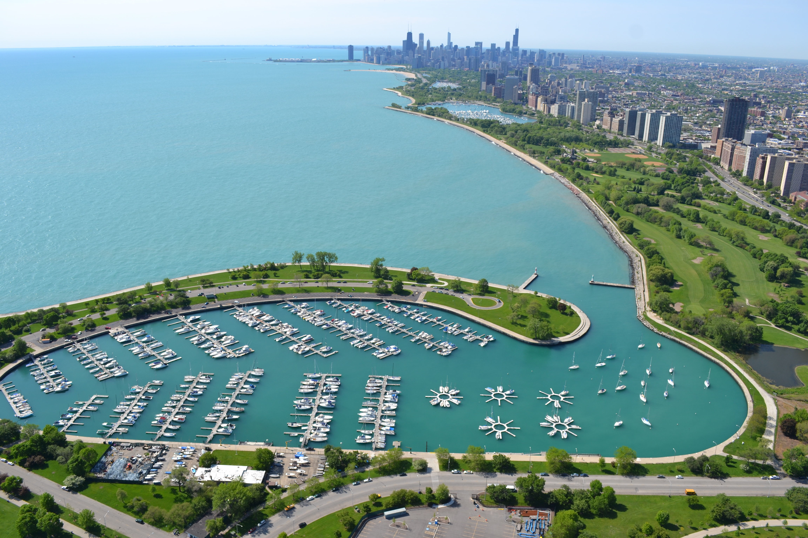
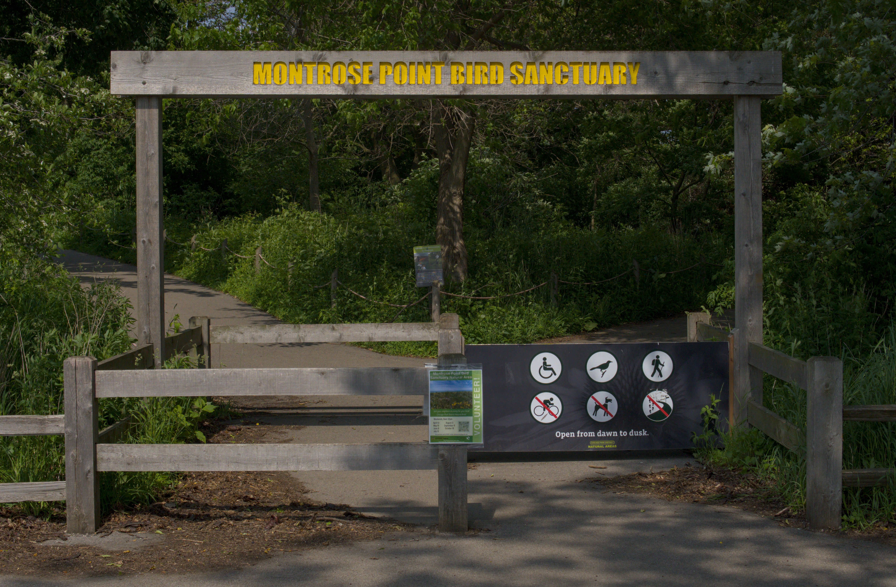

The Beach
Montrose Beach is one of Chicago's largest and most popular public beaches, known for its wide stretch of sand, calm swimming areas, and unobstructed views of the downtown skyline. It's a popular spot for volleyball, picnicking, and watching the sunrise over Lake Michigan. Just south of the main sanctuary, Montrose Dog Beach gives four-legged visitors their own dedicated stretch of shoreline to swim and play off-leash.
As evening approaches, the beach takes on an entirely different atmosphere. The sun sets behind the city rather than over the water here, casting warm light across the sand and turning the skyline into a silhouette — making Montrose one of the best lakefront spots in Chicago to watch the day wind down.

The Harbor
Montrose Harbor sits just north of the beach and is home to hundreds of sailboats throughout the summer season. The harbor's breakwater and pier are popular spots for walking, fishing, and taking in panoramic views of both the lake and the city skyline.

Montrose Point Bird Sanctuary
Located at the tip of Montrose Point, this 15-acre nature preserve is considered one of the best birding locations in the entire Midwest. Over 300 bird species have been recorded here, making it an internationally recognized destination for birdwatchers. The sanctuary's most famous feature, "the Magic Hedge," is a stretch of shrubs and trees that attracts an unusually high number of migratory songbirds each spring and fall.
The sanctuary also includes the Montrose Beach Dunes Natural Area, a rare dune habitat along the lakefront that has become home to nesting piping plovers — a federally endangered shorebird species that made international news when a breeding pair returned to Chicago's lakefront for the first time in decades.
